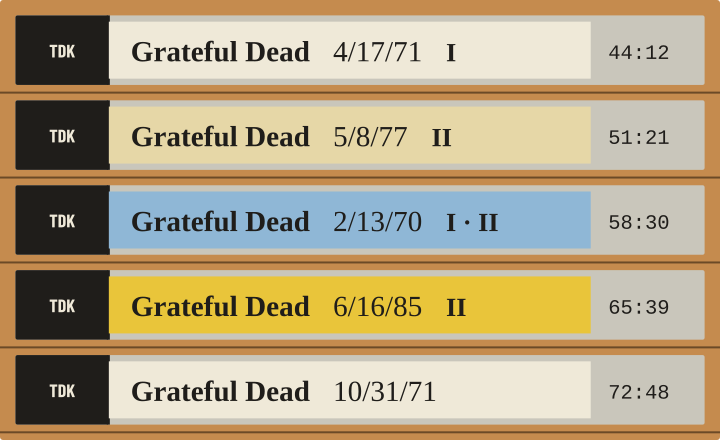

The Grateful Dead archive · private pilot
Find your way
into a show.
Choose a night. Play a set or the whole tape. Or tune in and hear what everyone else is hearing, at the same moment.

- 01
Sets and full shows, on demand.
Every tape on the shelf can be played as a set or as the complete recording. Track order is kept as the source published it.
- 02
One station. The same moment.
The shared radio plays a scheduled tape for everyone at once. Tune in and you land where the station is, not at the start.
- 03
Credits stay with every tape.
Taper, transferer and source lineage travel with each recording. Where set boundaries are unreviewed, the tape says so.
The rack · sample tapes
The tapes and the station above are samples drawn from the design proposal. The catalog in the running pilot is what counts.
Where it runs
A private pilot, on purpose.
Dedhed runs on a loopback address for its operator. There is no public domain and no public relay. That a recording is available from its source does not make it ours to broadcast.
Acquired audio, snapshots and credentials stay outside the repository. The design system that this page uses is kept in the product repository under docs/design.